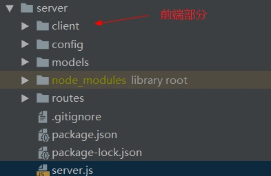

在开发的时候，有时在命令工具里面，要多开两个窗口分别启动前端项目和后端服务接口，有没有办法将整个项目一起启动呢
答案是有，前端和后端连载一起启动，适用于前端为vue或React，后端为nodejs的项目。
只需用到一个npm包concurrently模块，通过package.json配置实现。
假设你是vue+nodejs项目，项目根目录为server，vue前端部分放于client目录下

1.在项目根路径server下安装concurrently模块
cnpm install concurrently -S2.配置client下的package.json
1 "scripts": {
2 "serve": "vue-cli-service serve",
3 "build": "vue-cli-service build",
4 + "start": "npm run serve"
5 },3.配置项目根目录server下的package.json
1 "scripts": {
2 + "client-install": "npm install --prefix client",
3 + "client": "npm start --prefix client",
4 "start": "node server.js",
5 "server": "nodemon server.js",
6 + "dev": "concurrently \"npm run server\" \"npm run client\""
7 },4.启动前后端
npm run dev更多用法见
https://github.com/kimmobrunfeldt/concurrently